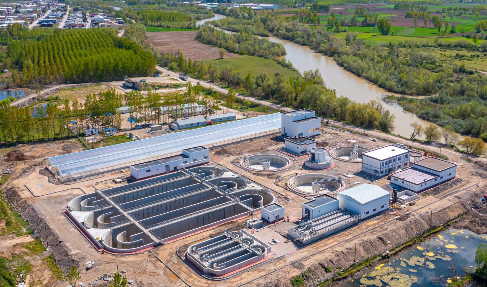

Mühendislik · Müşavirlik · Proje Yönetimi
Sürdürülebilir ve dayanıklı bir gelecek için mühendislik
ENVESU; fizibilite ve tasarımdan tedarik, inşaat denetimi ve işletmeye kadar tüm proje yaşam döngüsü boyunca kamu kurumlarını, uluslararası finans kuruluşlarını ve özel sektör yatırımcılarını destekler.

Biz kimiz
İklim değişikliğinin yarattığı sorunlara mühendislik çözümleri
Envesu Çevre Enerji İnş. ve Müş. A.Ş. (ENVESU) 2021 yılında kurulmuş, dinamik ve hızla büyüyen bir mühendislik ve danışmanlık firmasıdır. Proje yönetimi, inşaat yönetimi ile mühendislik ve danışmanlık hizmetlerinde uzmanlaşmıştır.
Su ve çevre, atıksu geri kazanımı, şebeke kayıpları (NRW), yenilenebilir enerji ve enerji verimliliğinin yanında kamu ve özel binalar, eğitim ve sağlık tesisleri, karayolları, demiryolları ve endüstriyel tesislerde hem teknik açıdan sağlam hem de çevreye duyarlı altyapılar sunar.
FIDIC ve PRAG sözleşme deneyimi
Çok disiplinli ekipler, uluslararası finansmanlı büyük ölçekli projelerde tasarım ve denetim sorumluluklarını bu çerçeveler içinde yürütür.
Entegre, ISO sertifikalı yönetim sistemi
ISO 9001, ISO 14001 ve ISO 45001 belgeli; her proje için ayrı Kalite Planı hazırlanır.
BIM ve bulut tabanlı proje yönetimi
Her disiplin tek modelde çalışır; sözleşme, ilerleme, maliyet ve doküman kayıtları tek sistemde izlenir.
Hizmetlerin proje yaşam döngüsü boyunca dağılımı
İhtiyaç analizinden işletmeye, projenin her aşamasında
Faaliyet alanlarımız
Sektörler
Seçilmiş referanslar
Öne çıkan projeler
Uluslararası finans kuruluşları
Büyük donör ve UFK'ların finanse ettiği projelerde görev alıyoruz
Merkezimiz İstanbul'dadır; Ankara ve Özbekistan'daki ofislerimizle Türkiye genelinde ve uluslararası pazarlarda hizmet veriyoruz.
Birlikte çalışalım
Projeniz için doğru ekibi kuralım
Fizibilite, tasarım, ihale dokümanı, proje yönetimi veya inşaat denetimi: ihtiyacınızı yazın, ilgili departmanımız size dönsün.
Merkez Ofis — İstanbul
Atatürk Mahallesi, Ertuğrul Gazi Sokak, Metropol İstanbul, A/22, Ataşehir / İstanbul
Anasayfa / Hakkımızda
Biz Kimiz
2021'de kurulan ENVESU, kısa sürede uluslararası finansmanlı karmaşık projeleri teslim eden bir mühendislik ve danışmanlık ortağına dönüştü.
Envesu Çevre Enerji İnş. ve Müş. A.Ş. (ENVESU); proje yönetimi, inşaat yönetimi ile mühendislik ve danışmanlık hizmetlerinde uzmanlaşmış olup müşterilerini fizibilite ve tasarımdan tedarik, inşaat denetimi ve işletmeye kadar tüm proje yaşam döngüsü boyunca desteklemektedir. “Sürdürülebilir ve Dayanıklı Bir Gelecek İçin Mühendislik” ilkesiyle hareket eden ENVESU, iklim değişikliğinin yarattığı zorlukların çözümüne ve hem teknik açıdan sağlam hem de çevreye duyarlı altyapılar sunmaya odaklanır.
Uzmanlığı geniş ve birbirini tamamlayan bir sektör yelpazesine uzanır: Su ve Çevre Projeleri, Yenilenebilir Enerji, Atıksu Geri Kazanımı ve Yeniden Kullanımı, Şebeke Kayıpları (NRW) ve Enerji Verimliliği; bunun yanı sıra Kamu ve Özel Binalar, Eğitim ve Sağlık Tesisleri, Karayolları ve Demiryolları ile Endüstriyel Tesisler (Gıda-İçecek ve Kimya dâhil).
ENVESU, geleneksel kamu sektörü hizmetlerinin ötesinde, özel sektörle iş birliği içinde alternatif finansman modelleri geliştirmek üzere yabancı yatırımla köprüler kurar ve müşterilerine sunduğu çözüm yelpazesini genişletir.
Ekip 2024 yılı sonunda 130 çalışana ulaşmıştır: 86 kadrolu personel ile 44 ortak girişim ve proje bazlı uzman. Büyük çoğunluğu teknik açıdan nitelikli mühendis ve mimarlardır. Çok disiplinli ekipler FIDIC ve PRAG çerçeveleri kapsamındaki sözleşmesel sorumlulukları iyi kavrar; bu sayede firma büyük ölçekli, karmaşık ve uluslararası projelerde güvenilir tasarım ve denetim hizmetleri sunar.
Finansman kuruluşları
ENVESU, aşağıdaki donör ve Uluslararası Finans Kuruluşlarının (UFK) finanse ettiği projeleri yürütmektedir.
Misyonumuz
En yüksek uluslararası ve ulusal standartları karşılayan profesyonel mühendislik ve danışmanlık hizmetleri sunarken sürdürülebilir ve sosyal açıdan sorumlu uygulamaları her işin içine yerleştirmek.
FIDIC ve PRAG sözleşme çerçeveleri kapsamında çalışan ve ISO 9001, ISO 14001 ile ISO 45001 sertifikalarına sahip firmamız; kaliteyi, çevresel performansı ve iş sağlığı ile güvenliğini aynı titizlikle yöneterek her projenin güvenilir, sorumlu biçimde ve hizmet verdiğimiz topluluklar ile müşterilerin yararına teslim edilmesini sağlar.
Vizyonumuz
Sürdürülebilir ve yenilikçilik odaklı danışmanlık hizmetlerinin önde gelen sağlayıcısı olmak ve müşterilerimize zaman-maliyet-kalite üçgenine disiplinli biçimde odaklanarak tüm proje yaşam döngüsü boyunca rehberlik etmek.
Hem çevreye duyarlı hem de değişen iklimin zorluklarına karşı dayanıklı altyapılar şekillendirmeyi; teknik mükemmellik, uluslararası finans ve uzun vadeli değer arasında köprüler kurmayı amaçlıyoruz.
Temel değerlerimiz
Sürdürülebilirlik ve Dayanıklılık
Çevreyi koruyan ve zamana karşı dayanıklı altyapılar tasarlar ve hayata geçiririz.
Kalite ve Dürüstlük
Entegre, ISO sertifikalı yönetim sistemimizin desteğiyle uluslararası standartları ve FIDIC ilkelerini gözetiriz.
Çevresel ve Sosyal Sorumluluk
Her projenin çevresel ve sosyal etkisini göz önünde bulundurur; insanları ve ekosistemleri korumak için hareket ederiz.
Yenilikçilik ve İş Birliği
Yaratıcı ve uluslararası birikime dayalı çözümler sunar; müşteriler, topluluklar ve finans kuruluşlarıyla yakın iş birliği içinde çalışırız.
Şirket bilgileri
Künye
- Resmi unvan
- Envesu Çevre Enerji İnş. ve Müş. A.Ş.
- Kuruluş yılı
- 2021
- Merkez
- Atatürk Mahallesi, Ertuğrul Gazi Sokak, Metropol İstanbul, A/22, Ataşehir / İstanbul / Türkiye
- Ofisler
- Merkez: İstanbul · Şube ofisleri: Ankara, Özbekistan
- Sicil no
- 298340-5
- Vergi dairesi / no
- Kozyatağı V.D. — 3361137179
- Yönetim Kurulu Başkanı
- Fikret Azılı
- Genel Müdür
- Numan Tüfekçi
İşverenler ve paydaşlar
Birlikte çalıştığımız kurumlar
Anasayfa / Hakkımızda
Proje Yaklaşımımız
Verimli ve iyi organize edilmiş bir yönetim yapısı, kalite kontrol sistemi ve sağlam raporlama prosedürleri her projenin başarısı için temel öneme sahiptir.
Proje yaşam döngüsü
Dokuz temel yönetim alanı, tek bütünleşik yapı
ENVESU, hizmet yelpazesini titizlikle inceleyerek projenin tüm yönlerinin yüksek bir mesleki ve uluslararası standartta yürütülmesini sağlayacak yönetim organizasyonunu kurmuştur.
Bir inşaat projesinin başarısı, yandaki temel yönetim unsurlarının sağlıklı kontrolüne dayanır. Zaman, maliyet ve kalite etkilerini birlikte değerlendirir; kilometre taşlarını, riskleri ve önlemleri tanımlayarak uygulama öncesi ve sonrası dâhil proje süresi boyunca müşterilerimizi destekleriz.
Proje teslim aşamaları
Kamulaştırmadan kusur sorumluluk süresine
Projeleri yedi aşamalı teslim süreci üzerinden planlıyor ve izliyoruz.
Uluslararası finans kuruluşları ve proje yönetim süreçleri
UFK proje döngüsünde ENVESU desteği
Politika çerçevesinden kapanış raporuna kadar her adımda Proje Uygulama Birimlerine (PIU) uygulama desteği veriyoruz.
| Politika ve Kurumsal Çevre | Proje Planlama | Proje Geliştirme | Proje Uygulama | Proje İzleme ve Değerlendirme |
|---|---|---|---|---|
| Kurumlar | İhtiyaçların belirlenmesi | Proje hazırlama | İnşaat / yapım | Mevcut durum analizi |
| Düzenlemeler | Yatırım önceliklendirme | Proje değerlendirmesi | İşletme ve bakım | Etki analizi |
| Bütçe çerçevesi | Teslimat stratejisi | İhale / satın alma | Sözleşme takibi | Kapanış raporu |
| Kullanım | Yaygınlaştırma |
UFK ve satın alma yöntemleri
Nitelikli uzmanlarla hizmet
Uluslararası finans kuruluşlarının satın alma kılavuzlarına ve FIDIC / PRAG sözleşme çerçevelerine uygun çalışan ekiplerimiz, projenin gerektirdiği uzmanlık profillerini bir araya getirir.
Anasayfa / Hakkımızda
İnsan Kaynağımız
Yürütme yönetimini uzmanlaşmış teknik departmanlara bağlayan açık ve disiplin temelli bir yapıyla çalışıyoruz.
Bu organizasyon; tanımlı hesap verebilirlik hatlarını ve çok disiplinli ekiplerin fizibilite ve tasarımdan tedarik ve inşaat denetimine kadar tüm proje türlerinde verimli biçimde harekete geçirilmesini güvence altına alır.
ENVESU ekibi 2024 yılı sonunda 130 çalışana ulaşmıştır: 86 kadrolu personel ile 44 ortak girişim ve proje bazlı uzman. Büyük çoğunluğu yüksek standartlarda yetişmiş, teknik açıdan nitelikli mühendis ve mimarlardır.
Altyapı Departmanı
Departman Başkanı · Uzmanlar · Teknik Personel
Üstyapı Departmanı
Binalar · Endüstriyel Tesisler
Bölüm Başkanları · Uzmanlar · Teknik Kadro
Ulaştırma Departmanı
Departman Başkanı · Uzmanlar · Teknik Personel
Enerji Departmanı
Departman Başkanı · Uzmanlar · Teknik Personel
Profesyonel kadro
Uzmanlık alanlarına göre dağılım
Kişi sayısı, şirket profilindeki profesyonel kadro tablosuna göre.
Proje ekipleri
Görevlendirdiğimiz uzman profilleri
Anasayfa / Hakkımızda
Çevre ve Sosyal Politikamız
Yalnızca teknik tasarım çözümlerini değil, ekonomik, çevresel ve sosyal etkileri de birlikte ele alıyoruz.
Alınan derslere dayanarak ENVESU, sadece teknik tasarım çözümlerini değil, aynı zamanda ekonomik, çevresel ve sosyal etkileri de dikkate almanın altını çizmektedir.
- Teknik etkiler
- Her türlü afete dayanıklı inşaat teknolojisi ve yapıların sağlamlığı
- Sosyal ve çevresel etkiler
- Paydaşların memnuniyeti, çevreye duyarlılık ve uyum kapasiteleri
- Ekonomik etkiler
- Ulaşılabilirlik, eşitlik, adalet, etkin kaynak yönetimi
- Proje yönetimi bileşeni
- Hız, esneklik, stratejik düşünme ve proje ekibi
ENVESU sadece yapıları restore ve inşa etmekle kalmıyor, daha güçlü toplulukları yeniden kuruyor.
Uluslararası çerçevelerle uyum
Çevresel ve Sosyal Yönetim Planları (ÇSYP), çevresel etki taramaları ve paydaş katılım süreçlerini finansman kuruluşlarının standartlarına göre hazırlıyoruz.
- Dünya Bankası Çevresel ve Sosyal Çerçevesi (ESF) ile uyumlu ÇSYP — TFDMP
- Fizibilite, ÇED ve ÇSYP çalışmaları — İZSU
- Çevresel ve sosyal etki izleme sistemi — Belediye Dayanıklılık Projeleri
Her işin üç bileşeni
Fiziksel / teknik, finansal, çevresel ve sosyal
Fiziksel / Teknik Bileşen
Sağlam ve risk-güvenli yapılar, uygun malzeme ve teknoloji, kaliteli inşaat ve beceriler, modüler inşaat sistemleri.
Finansal Bileşen
Sürdürülebilirlik, kendine yetebilirlik, satın alınabilirlik, kaynağa gelişmiş erişim ve çeşitlilik.
Çevresel ve Sosyal Bileşen
Çevreye duyarlı ve iklim dostu çözümler, kültürel ve mekânsal çeşitlilik, farkındalık ve beklentiler, toplum için taşıdığı anlam.
Anasayfa / Hakkımızda
Kalite ve Sertifikalar
Her işin planlanmasını, yönetimini ve kontrolünü destekleyen entegre bir Proje Yönetim Sistemi kurduk.
Kalite Yönetim Sistemi
TS EN ISO 9001:2015
Çevre Yönetim Sistemi
TS EN ISO 14001:2015
İş Sağlığı ve Güvenliği Yönetim Sistemi
TS ISO 45001:2018
Entegre yönetim sistemi
Sistem; kalite yönetimi (ISO 9001), çevre yönetimi (ISO 14001) ve iş sağlığı ve güvenliği yönetimi (ISO 45001) uluslararası standartlarına göre belgelendirilmiştir ve Uluslararası Danışman Mühendisler Federasyonu'nun (FIDIC) iş dürüstlüğü ilkelerine uygundur.
Bu sistemin prosedürlerine dayanarak her proje için özel bir Kalite Planı hazırlanır. Kalite Planı; kalite, çevre, iş sağlığı ve güvenliği ile iş dürüstlüğünün yönetimine ilişkin ayrıntılı plandır.
Kalite Planı neleri kapsar?
Anasayfa / Faaliyetler
Sektörler
Su ve çevreden endüstriyel tesislere, enerjiden ulaştırmaya birbirini tamamlayan sektörlerde hizmet veriyoruz.
Anasayfa / Faaliyetler
Hizmetler
Tüm proje yaşam döngüsü boyunca kapsamlı bir profesyonel mühendislik ve danışmanlık hizmetleri yelpazesi sunuyoruz.
Hizmet türleri
On üç hizmet, beş başlık
Proje yönetim desteği
Hizmetlerin proje yaşam döngüsü boyunca dağılımı
Projelerde en sık verdiğimiz hizmetler
Referans projelerden
Aşağıdaki sayılar, sitede yer alan 30 referans projenin “verilen hizmetler” listelerinden derlenmiştir.
Anasayfa / Faaliyetler
Dijital Mühendislik ve BIM
Projelerimizi, Yapı Bilgi Modellemesi'ni (BIM) tamamen bulut tabanlı bir yönetim platformuyla birleştiren teknoloji odaklı bir iş akışıyla hayata geçiriyoruz.
BIM yaklaşımımız
Tek model, her disiplin
Bir şirketin başarısı, güncel teknolojiyi ne kadar iyi kullandığıyla giderek daha fazla belirleniyor. ENVESU veri odaklı tasarım yöntemlerini erken benimsedi; her disiplinin tek ve koordineli bir model üzerinden çalıştığı yenilikçi, sürdürülebilir ve maliyet etkin planlama sunuyor.
BIM yöntemlerini projelerimizin genelinde uyguluyor; bütünleşik süreçler ve proje yaşam döngüsünün tamamında uçtan uca veri erişimiyle üç boyutlu tasarımda birikim oluşturuyoruz.
Uygulamada BIM: SAGRA Fatsa (Ordu) Endüstriyel Tesisleri
Üretim tesisi için çok disiplinli koordinasyon modeli.
- Mekanik / HVAC
- Kanallar, cihazlar ve çatı ekipmanları
- Proses borulama
- Güzergâhı belirlenmiş, çakışma kontrolü yapılmış
- Mimari
- Kabuk ve sirkülasyon
- Statik
- Taşıyıcı sistem ve erişim platformları
Tek bulut platformu
İhaleden kesin hesaba, tek bağlantılı sistem
Sözleşmeler, ilerleme raporları, bütçeler, dokümanlar, çizimler, puantajlar, satın alma ve kalite kayıtları tek sistemde; ekiplerimizin, ortaklarımızın ve proje paydaşlarının gerçek zamanlı erişimine açık.
Dijital iş akışı
Talepten denetim izine beş adım
Tam şeffaflık
İlerleme, bütçe ve onaylar gerçek zamanlı görünür.
Daha hızlı kararlar
Dijital onay akışları hakediş ve raporları hızlandırır.
Denetime hazır, FIDIC uyumlu
Her kayıt donör raporlaması ve uyum için izlenebilir.
Tek doğru kaynak
Sözleşmeler, dokümanlar ve maliyetler tüm taraflar için tek yerde.
İşveren, donör / müşavir, ana yüklenici, alt yükleniciler, tedarikçiler ve idareler tek kontrollü ortamda çalışır. Talep edildiğinde işverene, tüm üçüncü taraflarla dosya alışverişini denetim iziyle birlikte izleyebileceği güvenli bir takip erişimi sağlanır.
Projeler
2021'den bu yana 46 projelik bir portföy: 29'u tamamlandı, 17'si devam ediyor. Aşağıda sektörlere göre 30 referans proje yer alıyor.
Kariyer
Uluslararası finansmanlı altyapı, enerji ve endüstri projelerinde çalışmak isteyen mühendis, mimar ve uzmanları ekibimize bekliyoruz.
ENVESU'da çalışmak
Ulusal ve uluslararası projelerde görev almış dinamik ve deneyimli bir kadroyuz. Profesyonel olarak kalifiye ve yüksek teknik standartta eğitim almış ekibimiz, FIDIC ve PRAG sözleşmelerinden doğan tasarım ve yönetim sorumluluklarını yürütür.
Ekiplerimizde yer alan disiplinler
Açık pozisyon ilanları yayınlandığında bu sayfada listelenecek. Genel başvurular için özgeçmişinizi info@envesu.com adresine gönderebilirsiniz.
Genel başvuru
İletişim
İstanbul merkez ofisimiz, Ankara ortak girişim ofisimiz ve Özbekistan şube ofisimizle hizmet veriyoruz.
Merkez Ofis
İstanbul
Atatürk Mahallesi, Ertuğrul Gazi Sokak,Metropol İstanbul, A/22
Ataşehir / İstanbul
Ortak Girişim Ofisi
Ankara
Beştepe Mah. Nergis Sok. No:7Via Tower D:53-54
Yenimahalle / Ankara
Şube Ofisi
Özbekistan
Orta Asya'daki projelerimiz için şube ofisimiz Özbekistan'da faaliyet göstermektedir.Bize ulaşın
Projenizi anlatın
İhtiyacınızı birkaç cümleyle yazın; konuya göre ilgili departmanımız (Altyapı, Üstyapı, Ulaştırma veya Enerji) sizinle iletişime geçsin.
Kişisel Verilerin Korunması
6698 sayılı Kişisel Verilerin Korunması Kanunu kapsamında aydınlatma metni.
Taslak yapı. Aydınlatma metninin nihai hali hukuk onayından sonra bu sayfaya eklenecektir. Aşağıdaki başlıklar metnin iskeletini gösterir.
- Veri sorumlusu
- Envesu Çevre Enerji İnş. ve Müş. A.Ş. — Atatürk Mahallesi, Ertuğrul Gazi Sokak, Metropol İstanbul, A/22, Ataşehir / İstanbul
- İşlenen veriler
- İletişim ve başvuru formlarıyla iletilen kimlik ve iletişim bilgileri ile mesaj içeriği
- İşleme amaçları
- Taleplerin yanıtlanması ve iş başvurularının değerlendirilmesi
- Aktarım
- Metin onaylandığında eklenecek
- Saklama süresi
- Metin onaylandığında eklenecek
- İlgili kişinin hakları
- Kanun'un 11. maddesi kapsamındaki haklar ve başvuru yöntemi
- Başvuru
- info@envesu.com